<!-- .slide: class="title" --> <h1 style="font-size: 4ex">Introduction to Velociraptor</h1> <div class="inset"> ## Duke University Workshop ### Mike Cohen, Digital Paleontologist ### Rapid 7 Inc </div> <img src="/resources/velo_bike.gif" class="fixed" style=" right: 0px; bottom: -100px; height: 300px; z-index: -10;"/> --- <!-- .slide: class="content" --> ## Overview This workshop introduces Velociraptor - an advanced endpoint visibility tool for DFIR. * Tool Overview * GUI Tour * Case study: Search for files. * Case study: NTFS analysis. * Artifacts of Autumn: Case study * Case study: BITS disable logs. * Offline collections
<!-- .slide: class="content" --> ## What is Velociraptor? * Velociraptor is a unique Free and Open Source DFIR tool, giving you power and flexibility through the Velociraptor Query Language * VQL is used to drive a powerful set of forensic capabilities: * Using VQL we can write custom "Artifacts" to identify emerging threats quickly and safely * Hunt for artifacts at scale over thousands of end points within minutes! --- <!-- .slide: class="full_screen_diagram" --> ## Deployment overview  --- <!-- .slide: class="content" --> ## Typical deployments * Support Linux, Windows, MacOS, FreeBSD … * Server simply collects the results of queries - clients do all the heavy lifting. * Client memory and CPU usage is controlled via throttling and active cancellations. * Server is optimized for speed and scalability * Concurrency control ensures stability * Bandwidth limits ensure network stability --- <!-- .slide: class="content" --> ## Typical deployments Current recommendations * 10k-15k clients - single server with file based data store (usually cloud VM). * SSL load is the biggest load - TLS offloading helps a lot! * 8 GB RAM/8 cores is generous towards the top of the range. * We recommend Ubuntu/Debian server * 15-20k to 150k endpoints we recommend a multi-frontend setup.
<!-- .slide: class="title" --> # Velociraptor Installation and GUI tour --- <!-- .slide: class="content" --> ## Create a local server * Create a local server on your windows system. * We will use this server's notebook feature to learn about windows artifacts * Run Velociraptor on your machine * Download Velociraptor from GitHub (.msi or .exe) ``` velociraptor-v0.72.3-windows-amd64.exe gui ``` --- <!-- .slide: class="full_screen_diagram" --> The "gui" command creates an instant temporary server/client with self signed SSL and a hard coded admin/password.  --- <!-- .slide: class="full_screen_diagram" --> ## Your Velociraptor is ready to use!  --- <!-- .slide: class="title" --> # A Velociraptor GUI tour --- <!-- .slide: class="content" --> ## The Dashboard * The Dashboard shows the current state of the installation: * How many clients are connected * Current CPU load and memory footprint on the server. * When running hunts or intensive processing, memory and CPU requirements will increase but not too much. * You can customize the dashboard - it’s also just an artifact. --- <!-- .slide: class="full_screen_diagram" --> ## The Dashboard  --- <!-- .slide: class="content" --> ## User Preferences You can customize the interface to your liking <div class="container small-font"> <div class="col"> * Themes </div> <div class="col"> * Languages * Timezones </div> </div> <img src="../../modules/gui_tour/user_preferences.png" style="bottom: inherit" class="" /> --- <!-- .slide: class="title" --> # Interactively investigate individual clients --- <!-- .slide: class="content small-font" --> ## Searching for a client To work with a specific client we need to search for it. Press the **Search** or **Show All** button to see some clients. You can also use the **Show recent hosts** to see your own clients.  --- <!-- .slide: class="content" --> ## Search for clients ### hostname, label, or client ID. * You can start typing the hostname to auto-complete * Some common terms: * `host`: search by hostnames * `mac`: Mac addresses * `ip`: last seen IP address * `label`: Search by labels --- <!-- .slide: class="content small-font" --> ## Client Overview * Internally the client id is considered the most accurate source of endpoint identity  --- <!-- .slide: class="content small-font" --> ## Shell commands * Velociraptor allows running shell commands on the endpoint using `Powershell`/`Cmd`/`Bash` * Only Velociraptor users with the administrator role are allowed to do this! * Actions are logged and audited ```powershell Get-LocalGroupMember -Group "Administrators" ```  --- <!-- .slide: class="title" --> # Interactively fetching files from the endpoint --- <!-- .slide: class="content small-font" --> ## The VFS View Remember that the VFS view is simply a server side cache of information we know about the endpoint - it is usually out of date!  --- <!-- .slide: class="content small-font" --> ## Navigating the interface * Click the “Refresh this directory” will schedule a directory listing artifact and wait for the results (usually very quick if the endpoint is online). * The “Recursively refresh this directory” will schedule a recursive refresh - this may take some time! After this operation a lot of the VFS will be pre-populated already. * “Collect from client” will retrieve the file data to the server. After which, the floppy disk sign indicates that we have file data available and you can click the “Download” link to get a copy of the file. --- <!-- .slide: class="content small-font" --> ## The VFS interface Previewing a file after download.  --- <!-- .slide: class="content small-font" --> ## Previewing files The GUI allows close inpection of binary files * Viewing in hex or text * Paging - skipping to offset * Searching using regex or hex strings 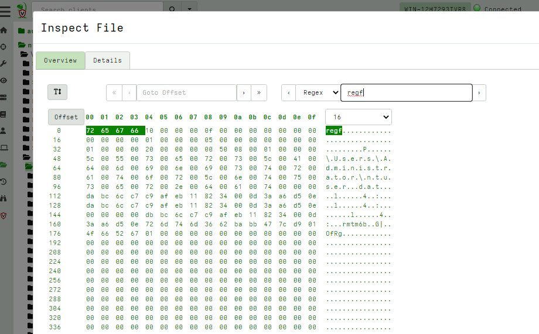
<!-- .slide: class="title" --> # Velociraptor Artifacts ## Fast, Efficient, Surgical --- <!-- .slide: class="content small-font" --> ## Why a query language? * Able to dynamically adapt to changing requirements - without needing to rebuild clients or servers. * For example, a new IOC is released for detection of a specific threat * Immediately write a VQL artifact for the threat, upload the artifact and hunt everywhere for it. * Turn around from IOC to full hunt: A few minutes. * Share artifacts with the community * VQL Artifacts are simply YAML files with VQL queries. * Can be easily shared and cross pollinate other Artifacts * Can be customized by callers. * [Public Artifact Reference](https://docs.velociraptor.app/artifact_references/) --- <!-- .slide: class="content" --> ## What is VQL? ```sql SELECT X, Y, Z FROM plugin(arg=1) WHERE X = 1 ``` * `X, Y, Z` are called Column Selectors * `plugin(arg=1)` is termed a VQL Plugin with Args * `X = 1` is the Filter Condition --- <!-- .slide: class="content" --> ## Velociraptor artifacts Velociraptor is just a VQL engine! * We package VQL queries in Artifacts: * YAML files * Include human description * Package related VQL queries into “Sources” * Take parameters for customization * Can in turn be used in VQL as well... --- <!-- .slide: class="content" --> ## What does the VFS view do under the cover? * Refreshing the VFS simply schedules new artifacts to be collected - it is just a GUI convenience.  --- <!-- .slide: class="content" --> ## Velociraptor uses expert knowledge A key objective of Velociraptor is encapsulating DFIR knowledge into the platform, so you don’t need to be a DFIR expert. We have high level questions to answer We know where to look for evidence of user / system activities We build artifacts to collect and analyze the evidence in order to answer our investigative questions. --- <!-- .slide: class="full_screen_diagram" --> ## Anatomy of an artifact  --- <!-- .slide: class="content small-font" --> ## Collecting new artifacts To collect a new artifact, from the Collected Artifacts screen, click Collect new artifact and search for it. Select Add to add it to this collection. When finished, click Next. 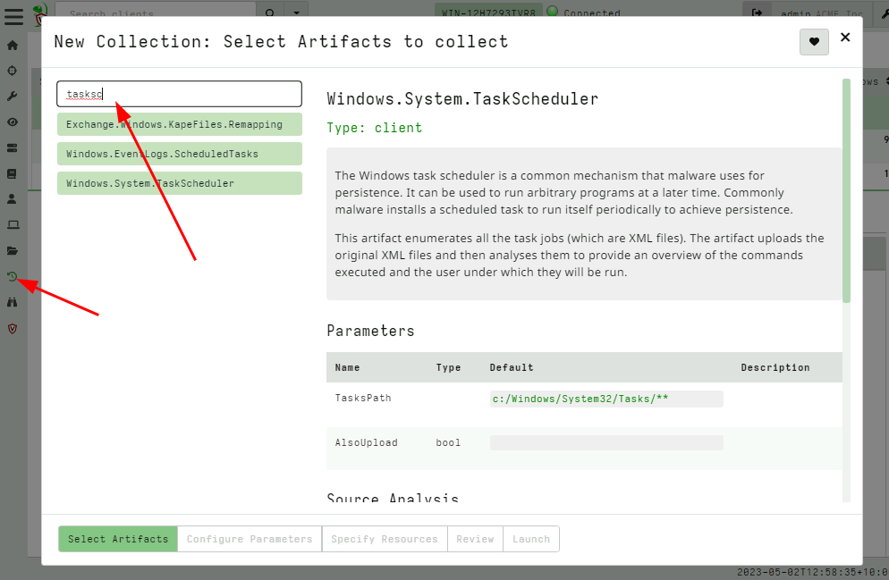 --- <!-- .slide: class="content small-font" --> ## Configuring the artifact collection * Many artifacts take parameters that can control the way they work. 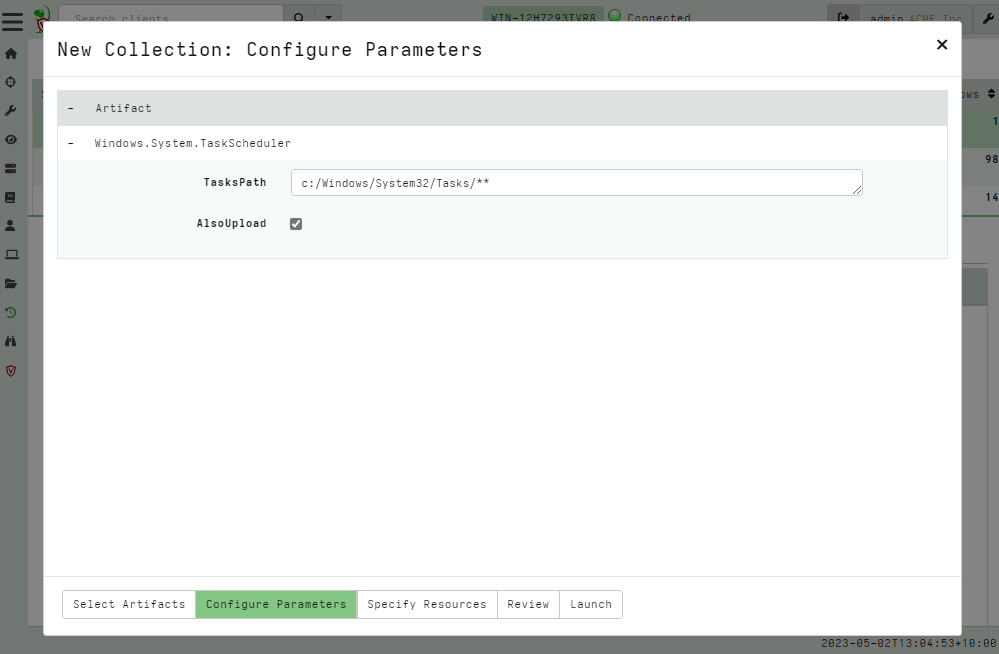 --- <!-- .slide: class="content small-font" --> ## Configuring collection resource limits There are many safety limits implemented into the client to control endpoint impact. 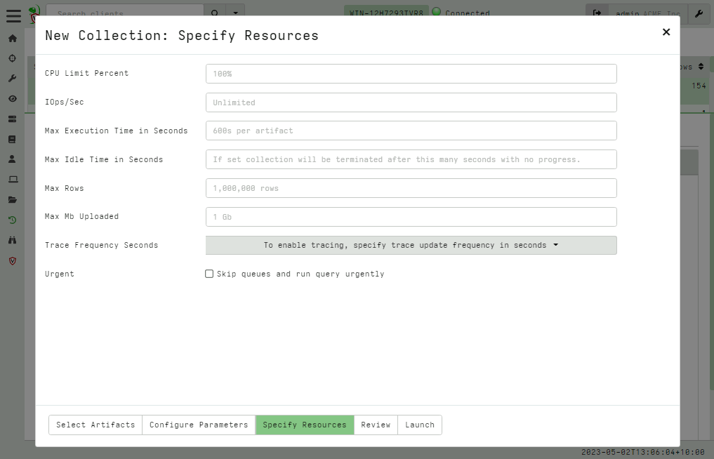 --- <!-- .slide: class="content small-font" --> ## What do artifacts return? * All artifacts produce rows since they are just queries. * Some artifacts also upload files. You can create a download zip to export all the uploaded files.  --- <!-- .slide: class="content small-font" --> ## Uploaded files * The uploads tab shows the file's location on the server. * You can download or preview each one individually.  --- <!-- .slide: class="content small-font" --> ## Artifact query logs * As the query is running on the endpoint any log messages are sent to the server. * Click the log tab to see if there were any errors and how many rows are expected.  --- <!-- .slide: class="content small-font" --> ## Artifacts return multiple tables (sources) * `Source Selector`: Viewing the result tab shows the rows sent from every artifact and source.  --- <!-- .slide: class="content small-font" --> ## Exporting artifact collections * Use the GUI to create a zip export of the collection * Set a password in user preferences to export an encrypted Zip File 
<!-- .slide: class="content" --> ## NTFS Overview * NTFS is the file system in all modern Windows operating systems. * Feature packed with a design focused on storage optimization and resilience. * NTFS implements Journalling to record metadata changes to track state and integrity of the file system. * Allows for recovery after system crashes to avoid data loss * File System objects referenced in a Master File Table (MFT) --- <!-- .slide: class="content" --> ## New Technology File System * In NTFS, the Master File Table (MFT) is at the heart of the file system. A structured database that stores metadata entries for every file and folder. * Every object gets an entry within the MFT. Each entry is usually 1024 bytes long. Contains a series of attributes that fully describe the object. --- <!-- .slide: class="content" --> ## MFT entries contain attributes <div class="container small-font"> <div class="col"> ## File entry examples * $STANDARD_INFORMATION * $FILE_NAME (Windows long name) * $FILE_NAME (short name) * $DATA * $DATA (alternate data stream sometimes) </div> <div class="col"> ## Folder entry examples * $STANDARD_INFORMATION * $FILE_NAME (Windows long name) * $FILE_NAME (short name) * $INDEX_ROOT * $INDEX_ALLOCATION (sometimes) </div> --- <!-- .slide: class="content small-font" --> ## NTFS Analysis Velociraptor offers a number of plugins to access detailed information about NTFS: * `parse_mft()`: parses each MFT entry and returns high level metadata about the entry - including reconstruct the full path of the entry by traversing parent MFT entries. * `parse_ntfs()`: Given an MFT ID this function will display information about the various streams (e.g. `$DATA`, `$Filename` etc) * `parse_ntfs_i30()`: This scans the `$i30` stream in directories to recover potentially deleted entries. --- <!-- .slide: class="content small-font" --> ## Finding suspicious files Parse the MFT using `Windows.NTFS.MFT` * Common DFIR use case is finding files * File name * Path * File type * Content * Velociraptor plugins * glob * parse_mft * yara * other content based plugins 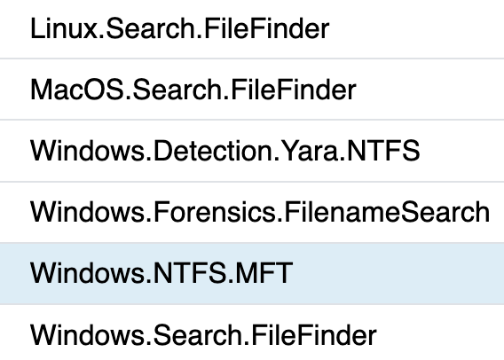 --- <!-- .slide: class="content" --> ## Windows.Forensics. FilenameSearch * Apply yara on the MFT * fast yara * simple string based * filename / top level folder only * comma separated * Crude and less control * Verbose results 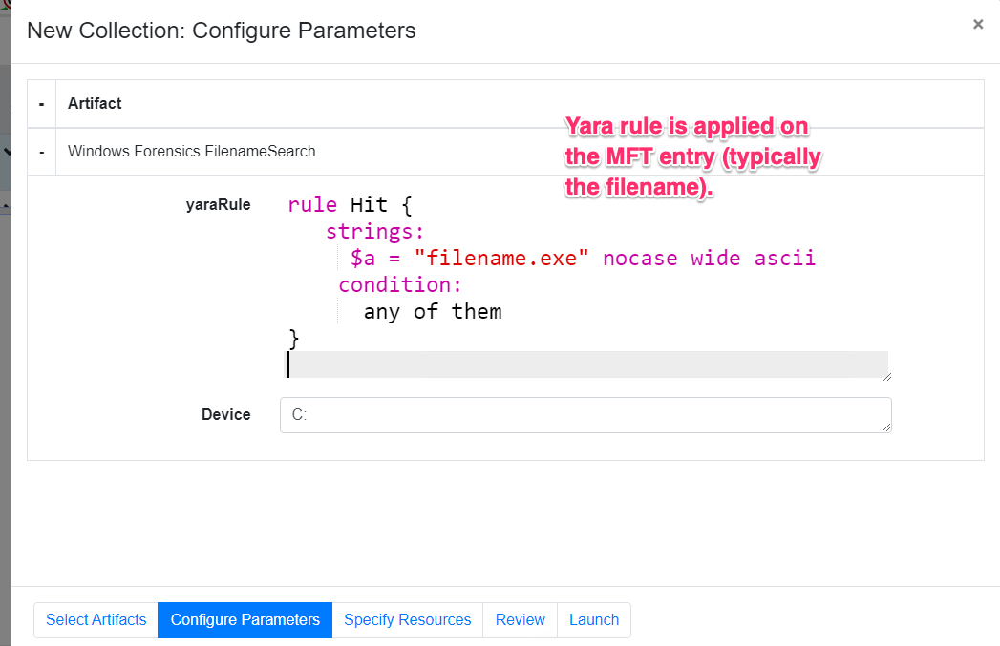 --- <!-- .slide: class="content" --> ## Windows.NTFS.MFT <div class="container small-font"> <div class="col"> * Parses MFT * Easy to use * Filters * Path * File name * Drive * Time bounds * Size * Performance optimised </div> <div class="col"> 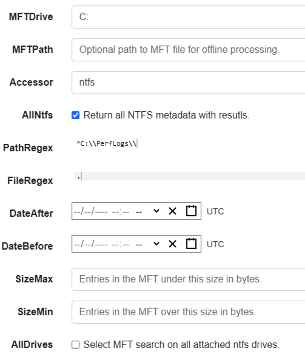 </div> </div> --- <!-- .slide: class="content" --> ## Exercise - Generate test data To automatically prep your machine run this script: ```powershell ### NTFS exercise setup ## 1. download some files to test various content and add ADS to simulate manual download from a browser $downloads = ( "https://live.sysinternals.com/PsExec64.exe", "https://live.sysinternals.com/procdump64.exe", "https://live.sysinternals.com/sdelete64.exe" ) foreach ( $url in $downloads){ "Downloading " + $Url $file = Split-Path $Url -Leaf $dest = "C:\PerfLogs\" +$file $ads = "[ZoneTransfer]`r`nZoneId=3`r`nReferrerUrl=https://18.220.58.123/yolo/`r`nHostUrl=https://18.220.58.123/yolo/" + $file + "`r`n" Remove-Item -Path $dest -force -ErrorAction SilentlyContinue Invoke-WebRequest -Uri $Url -OutFile $dest -UseBasicParsing Set-Content -Path $dest":Zone.Identifier" $ads } ``` --- <!-- .slide: class="content" --> ## More setup ```powershell ## 2.Create a PS1 file in staging folder (any text will do but this is powershell extension) echo "Write-Host ‘this is totally a resident file’" > C:\Perflogs\test.ps1 ## 3.Modify shortname on a file fsutil file setshortname C:\PerfLogs\psexec64.exe fake.exe ## 4. Create a process dumpOpen calculator (calc.exe) calc.exe ; start-sleep 2 C:\PerfLogs\procdump64.exe -accepteula -ma win32calc C:\PerfLogs\calc.dmp get-process | where-object { $_.Name -like "*win32calc*" } | Stop-Process ## 5. Create a zip file in staging folder Compress-Archive -Path C:\PerfLogs\* -DestinationPath C:\PerfLogs\exfil.zip -CompressionLevel Fastest ## 6. Delete dmp,zip and ps1 files - deleted file discovery is important for later! Remove-Item -Path C:\PerfLogs\*.zip, C:\PerfLogs\*.dmp, C:\PerfLogs\*.ps1 ``` Note: * Download and copy to staging folder C:\PerfLogs\ * https://live.sysinternals.com/procdump64.exe * https://live.sysinternals.com/sdelete64.exe * https://live.sysinternals.com/psexec64.exe * Add ADS to simulate Mark of the Web Create a PS1 file in staging folder (any text will do but this is powershell extension) ``` echo "Write-Host ‘this is totally a resident file’" > C:\Perflogs\test.ps1 ``` Modify short name on a file ``` fsutil file setshortname C:\PerfLogs\psexec64.exe fake.exe ``` Create a process dump Open calculator (`calc.exe`) ``` C:\PerfLogs\procdump64.exe -accepteula -ma calc C:\PerfLogs\calc.dmp ``` Create a zip file in staging folder - open `C:\Perflogs in Explorer` highlight and select: Send to > Compressed (zipped) folder. Delete `dmp.zip` and `ps1` files - deleted file discovery is important for later! ``` Remove-Item -Path C:\PerfLogs\*.zip, C:\PerfLogs\*.dmp, C:\PerfLogs\*.ps1 ``` --- <!-- .slide: class="content" --> ## Exercise <div class="container small-font"> <div class="col"> * Find contents of `C:\Perflogs` * Review metadata of objects * Explore leveraging filters * to target specific files or file types * to find files limited to a time frame * Can you find the deleted files? * You may get lucky and have an unallocated file show. * Try `Windows.Forensics.Usn` with filters looking for suspicious extensions in our staging location! </div> <div class="col"> 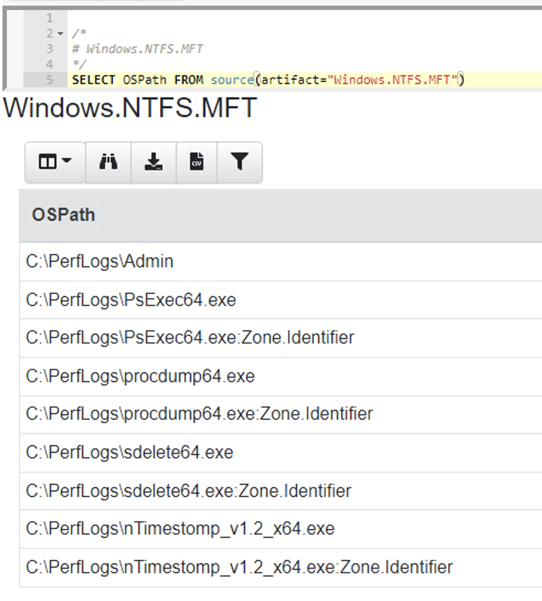 </div> </div> --- <!-- .slide: class="content small-font" --> ## The USN journal * Update Sequence Number Journal or Change journal is maintained by NTFS to record filesystem changes. * Records metadata about filesystem changes. * Resides in the path $Extend\$UsnJrnl:$J  --- <!-- .slide: class="content" --> ## USN Journal * Records are appended to the file at the end * The file is sparse - periodically NTFS will remove the range at the start of the file to make it sparse * Therefore the file will report a huge size but will actually only take about 30-40mb on disk. * When collecting the journal file, Velociraptor will collect the sparse file. --- <!-- .slide: class="content" --> ## Exercise - Windows.Forensics.Usn <div class="container small-font"> <div class="col"> Target `C:\PerfLogs` with the `PathRegex` field. * typically the USN journal only records filename and MFTId and ParentMFTId record. Velociraptor automatically reconstructs the expected path so the user can filter on path. * This artifact uses FullPath results with “/”. </div> <div class="col"> 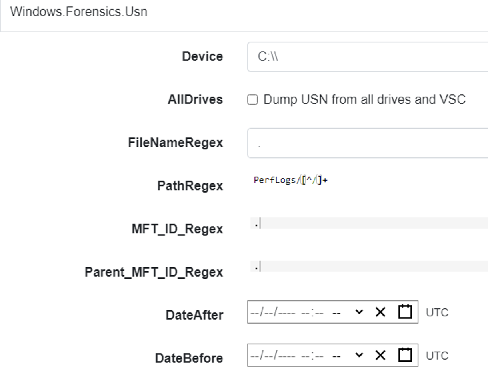 </div> </div> --- <!-- .slide: class="full_screen_diagram" --> ## Exercise - UsnJ solution * There are many entries even for a simple file action like download to disk.  --- <!-- .slide: class="content" --> ## Exercise - UsnJ solution <div class="small-font"> * But these are simple to detect when you know what to look for! <div class="container"> <div class="col">  </div> <div class="col">  </div> </div> </div> --- <!-- .slide: class="content" --> ## Advanced NTFS: Alternate Data Stream <div class="container small-font"> <div class="col"> * Most browsers attach an ADS to files downloaded from the internet. * Use the VFS viewer to view the ADS of downloaded files. * Use ADS Hunter to discover more interesting ADS * Use `Windows.Analysis. EvidenceOfDownload` to identify downloaded files and unpacked ZIP files. </div> <div class="col"> 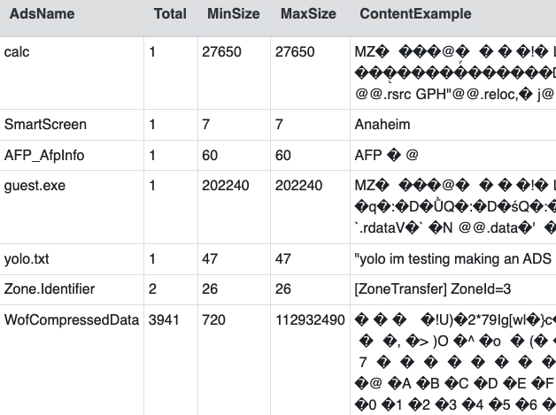 </div> </div> Note: The inset shows typical frequency analysis of ADS naturally occurring What is the `Wof` stuff? https://devblogs.microsoft.com/oldnewthing/20190618-00/?p=102597
<!-- .slide: class="title" --> ## Artifacts Of Autumn #37 <a href="https://twitter.com/therealwlambert/status/1586010158848622592" target="_blank"> 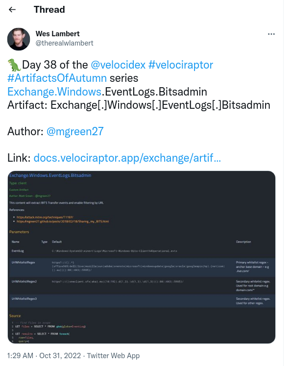 </a> --- <!-- .slide: class="content" --> ## Mounting ISO files in Windows * Normally files downloaded from the web have the Mark Of the Web (ADS). * This limits their ability to run macros etc. * Files may be embedded inside an ISO file. * ISO files may be mounted by Explorer. --- <!-- .slide: class="content" --> ## Exercise - Atomic Red Team Download the sample ISO file from the [Atomic Red Team](https://github.com/redcanaryco/atomic-red-team/blob/master/atomics/T1553.005/T1553.005.md#atomic-test-4---execute-lnk-file-from-iso) * You might need to disable Windows Defender for this one! * Double click on the ISO file to mount it. --- <!-- .slide: class="content" --> ## Detecting the attack We can check the event logs for mounting of the ISO. 
<!-- .slide: class="title" --> # Offline collection ## Collecting artifacts without Velociraptor clients --- <!-- .slide: class="content" --> ## Why Offline collection? * I want to collect artifacts from an endpoint * But Velociraptor is not installed on the endpoint! * Or the endpoint is inaccessible to the Velociraptor server (no egress, firewalls etc). * But Velociraptor is just a VQL engine! It does not really need a server anyway --- <!-- .slide: class="content" --> ## Create an offline collector <div class="container"> <div class="col">  </div> <div class="col"> #### Let's select two artifacts to collect: 1. Windows.KapeFiles.Targets * Select the Basic Collection to get many forensic artifacts 2. Generic.Collectors.SQLECmd </div> --- <!-- .slide: class="full_screen_diagram" --> ### Selecting the Windows.KapeFiles.Targets artifact  --- <!-- .slide: class="full_screen_diagram" --> ### Configuring the collector to encrypt output  --- <!-- .slide: class="full_screen_diagram" --> ### Downloading the prepared binary  --- <!-- .slide: class="content" --> ## Offline collector binaries * Preconfigured to collect the required artifacts * No user interaction needed - just run with no command line args * Prepare armoured Zip file with all the results in them --- <!-- .slide: class="full_screen_diagram" --> ### Acquire data!  --- <!-- .slide: class="content" --> ## Acquired file is encrypted * Due to limitations in the Zip format, file names can not be encrypted. * Therefore, Velociraptor creates a second protected Zip file inside the outer container. * Several encryption schemes supported: 1. Regular password 2. X509 - random password generated and encrypted with the server's certificate. 3. GPG - random password generated and encrypted with the GPG public key. --- <!-- .slide: class="content" --> ## Acquired file is encrypted  --- <!-- .slide: class="content" --> ## Importing into Velociraptor * Velociraptor can automatically decrypted offline containers when importing. * Use the Server.Utils.ImportCollection artifact to import collections * The server uses its private key to unlock the container automatically. * This preserves PII and confidential information in transit! --- <!-- .slide: class="full_screen_diagram" --> ### Import the collection into the Velociraptor server  --- <!-- .slide: class="full_screen_diagram" --> ### Inspect the import process  --- <!-- .slide: class="full_screen_diagram" --> ### Inspect the collected data 
<!-- .slide: class="title" --> ## Artifacts Of Autumn #38 <a href="https://twitter.com/therealwlambert/status/1586742178063286273" target="_blank"> </a> --- <!-- .slide: class="content" --> ## Bitsadmin service * Windows has a generic downloader service called Bits * It is a signed and trusted service but anyone can use it! * Nice way to bypass software allow-listing approaches.  --- <!-- .slide: class="content" --> ## Exercise - Atomic Red Team Work through the examples from the [Atomic Red Team](https://github.com/redcanaryco/atomic-red-team/blob/master/atomics/T1197/T1197.md#atomic-test-2---bitsadmin-download-powershell)  --- <!-- .slide: class="content" --> ## Detecting the attack Using the Windows.EventLogs.Bitsadmin artifact we can check the local event logs for signed of misuse... 
<!-- .slide: class="title" --> # Querying the registry ## Detecting event log modifications --- <!-- .slide: class="content" --> ## The Windows Registry * Windows uses the registry to store configuration data. * Many attackers modify system configuration to achieve persistence * It is very useful to be able to query the registry! * Velociraptor has two types of registry accessors: * "registry" uses the APIs * "raw_reg" parses the registry hives themselves --- <!-- .slide: class="content" --> ## Example: Disable event logs * Windows event logs are crucial for detection * Many detection solutions rely on forwarding event logs to a backend * It is trivial to enable/disable event log collection * Let's look at disabling the BITS client events --- <!-- .slide: class="full_screen_diagram" --> ## What is BITS? Why should we care?  --- <!-- .slide: class="content" --> ## What is BITS? <div class="container"> <div class="col"> BITS activity is visible in the logs ```text bitsadmin.exe /transfer /download /priority foreground https://www.google.com c:\Users\test\test.ps1 ``` </div> <div class="col"> <img src="bits-log.png" style="width: 50%" class="title-inset"> </div> </div> --- <!-- .slide: class="full_screen_diagram" --> ## Disable event logs  Note: It is easy to disable log collections - from the GUI or programmatically Try this yourself - disable the Bits-Client logs, clear the logs and repeat the previous step --- <!-- .slide: class="content" --> ## Query the registry for event log config * Disabling the event logs actually results in a configuration change in the registry. * The relevant keys are discussed in [Disabled Event Log Files](https://docs.velociraptor.app/blog/2021/2021-01-29-disabled-event-log-files-a3529a08adbe/) * We can use `Windows.EventLogs.Modifications` to query log state --- <!-- .slide: class="content" --> ## We can get a snapshot of all event logs  --- <!-- .slide: class="content" --> ## Being more targeted in collection <div class="container"> <div class="col"> * Most artifacts have parameters that allow us to be more targeted in collection * Being targeted is good because it reduces the amount of data we collect! </div> <div class="col"> 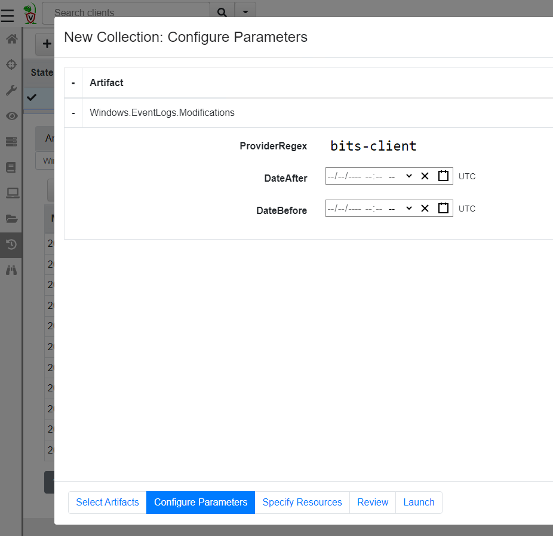 </div> </div> --- <!-- .slide: class="content" --> ## More targeted in collection * Treat the endpoint as the ultimate source of truth - need more data? go back and re-fetch it from the endpoint.  --- <!-- .slide: class="content small-font" --> ## Post processing with notebooks * Another alternative is to collect all the data and then post-process using the GUI * Helps us drill into the data and understand what is going on.  --- <!-- .slide: class="title" --> # Hunting at scale --- <!-- .slide: class="content" --> ## Hunting - mass collections Hunting is Velociraptor's strength - collect the same artifact from thousands of endpoints in minutes! * Two types of hunts: * Detection hunts are very targeted aimed at yes/no answer * Collection hunts collect a lot more data and can be used to build a baseline. --- <!-- .slide: class="content" --> ## Exercise - baseline event logs For this exercise we start a few more clients. ```text c:\Users\test>cd c:\Users\test\AppData\Local\Temp\ c:\Users\test\AppData\Local\Temp>Velociraptor.exe --config client.config.yaml pool_client --number 100 ``` This starts 100 virtual clients so we can hunt them * We use pool clients to simulate load on the server --- <!-- .slide: class="full_screen_diagram" --> ## Pool clients Simply multiple instances of the same client  --- <!-- .slide: class="full_screen_diagram" --> ## Create a hunt  --- <!-- .slide: class="full_screen_diagram" --> ## Select hunt artifacts  --- <!-- .slide: class="full_screen_diagram" --> ## Collect results  --- <!-- .slide: class="content" --> ## Exercise - Stacking * The previous collection may be considered the baseline * For this exercise we want to create a few different clients. * Stop the pool client * Disable a log channel * Start the pool client with an additional number of clients ``` Velociraptor.exe --config client.config.yaml pool_client --number 110 ``` --- <!-- .slide: class="full_screen_diagram" --> ## Stacking can reveal results that stand out 
<!-- .slide: class="content small-font" --> ## What did we not cover? * Velociraptor has a lot more than we were able to cover here: * Many more sources of data: Event logs, ETW, WMI eventing * Multi-Platform: Linux, MacOS, Windows, FreeBSD * Endpoint monitoring in real time: Detect and identify compromises in real time! * Automatic remediation: Apply active remediation to remove the driver and ensure all endpoints are clean. * Server automation and monitoring in real time with a python API. --- <!-- .slide: class="content" --> ## Conclusions * In this workshop we introduced Velociraptor - a powerful endpoint visibility solution, as used in a typical DFIR exercise. * We introduced VQL and gave some examples… * Searching for files, * registry keys and other endpoint state Hunting everywhere --- <!-- .slide: class="content" --> ## Conclusions We only scratched the surface of what Velociraptor can do! Check out the following links and join our community… <table class="noborder"> <tr> <td>Docs</td><td> <a href="https://docs.velociraptor.app/">https://docs.velociraptor.app/</a> </td> </tr> <tr> <td>Github</td><td> <a href="https://github.com/Velocidex/velociraptor">https://github.com/Velocidex/velociraptor</a> </td> </tr> <tr> <td>Discord</td><td> <a href="https://docs.velociraptor.app/discord/">https://docs.velociraptor.app/discord/</a> </td> </tr> <tr> <td>Mailing list</td><td> <a href="mailto:velociraptor-discuss@googlegroups.com">velociraptor-discuss@googlegroups.com</a> </td> </tr> </table>